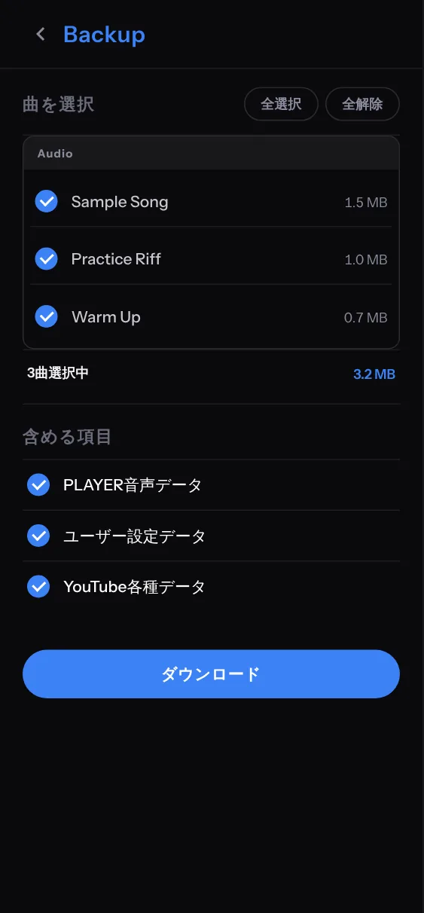
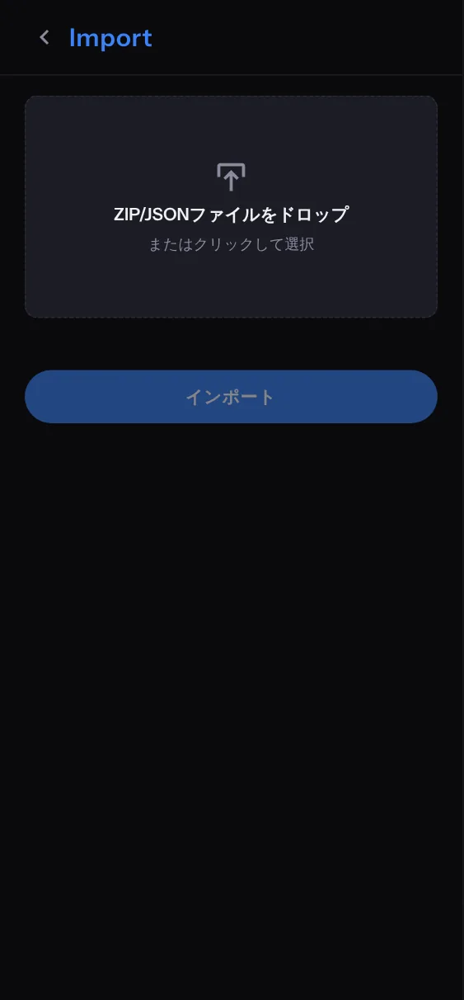

DATA & SYNC
保存・バックアップ・同期
データの保存、バックアップ、同期について説明します。
データの保存場所
QNPLAYER のデータは、基本的に、お使いの端末のブラウザの中だけに保存されます。自動で保存されるので、保存の操作は要りません。
| データ | 保存先 | 補足 |
|---|---|---|
| 音声ファイル | ブラウザ内のデータベース（IndexedDB） | 追加するとコピーが保存されます。元のファイルを消しても再生できます。 |
| 曲名、アーティスト、ON/OFF、フォルダ、ピン留め、並び順 | ブラウザの保存領域（localStorage） | 曲のファイル名をキーにして保存します。 |
| マーカー、A-B 点、テキスト | 同上 | 曲ごとに保存されます。 |
| 設定（テーマ、バーの長さ、ループの余白、言語など） | 同上 | 端末ごとの設定です。 |
ご注意
- 曲はファイル名で区別されます。同じ名前のファイルは同じ曲として扱われます。ファイル名を変えると別の曲になり、マーカーは引き継がれません。
- ブラウザの「サイトデータの削除」や、プライベートブラウズでの利用では、データが消えることがあります。
- ブラウザや端末が別のときは、データは共有されません。同じデータを別の端末で使うには、バックアップとインポート、または同期を使います。
- ログアウトしても、端末の中の曲と設定は消えません。
- 大切なマーカーやメモは、定期的にバックアップしてください。
バックアップとインポート
Settings の下の「More」にある バックアップ と インポート で、曲と設定をファイルに保存し、戻せます。端末の引っ越しや、データ消去への備えになります。
バックアップ（保存）
- Settings → バックアップ を開きます。
- 保存する曲を選びます。全選択・全解除と、選んだ曲の合計サイズが出ます。
- 「含める項目」を選びます。
- PLAYER音声データ：曲の音声ファイル本体
- ユーザー設定データ：マーカー、A-B 点、テキスト、フォルダなど
- YouTube各種データ：QNVIDEO のライブラリ
- ダウンロードを押します。

音声を含めると ZIP ファイルに、含めないと設定だけの JSON ファイルになります。QNPITCH の録音がある場合は、同じ画面で一緒に保存できます。
インポート（復元）
- Settings → インポート を開きます。
- ZIP または JSON ファイルをドロップするか、クリックして選びます。中身は自動で判定されます。
- 同じ名前の曲がすでにあると「重複する項目」に一覧されます。曲ごとに、上書きかスキップを選べます。スイッチで、まとめて切り替えられます。
- インポートを押します。

JSON だけのファイルは音声を含まないので、Library にある曲の設定を上書きするときだけ使えます。音声ごと戻したいときは、ZIP を使います。
ログインと同期
お知らせ同期と転送は、現在、一部のアカウントで先行して提供しています。提供の範囲は順次広げる予定です。
画面右上の「Google でログイン」からログインできます。ログインすると、プランの状態がアカウントに紐づき、同期と転送（Transfer）が使えるようになります。
Library 同期
同じアカウントでログインした端末どうしで、曲ごとの情報をそろえます。
| 同期する | 同期しない |
|---|---|
| 曲名、アーティスト、ON/OFF、お気に入り | MP3 などの音声ファイル本体 |
| フォルダと、曲・フォルダの並び順 | アプリの設定（音量、テーマ、EQ など） |
| マーカー、A-B ループ、テキスト | フォルダの開閉状態 |
- 同じ曲かどうかは、ファイル名とファイルサイズで判定します。名前かサイズが違うと、別の曲になります。
- 別の端末にあって、この端末に音声ファイルが無い曲は、Library の下部に「未インポート」として出ます。同じファイルをこの端末に追加するか、転送で受け取ると、マーカーなどが自動で付きます。
- 曲を Library から削除すると、同期からも外れます。ほかの端末の音声ファイルは消えません。
- 内容が食い違うときは、曲ごとに新しい更新が優先されます。端末の時計が大きくずれていると、判定がずれます。
- 同じ名前のフォルダは、1 つにまとめられます。
同期のタイミング
起動したとき、変更の数秒後、ページに戻ったとき、オンラインに復帰したときに、自動で同期します。Library の下部の「同期済み（時刻）」の表示をタップすると、すぐに手動で同期できます。失敗したときは赤い表示になり、タップでやり直せます。リアルタイムではないので、相手の端末の変更は、こちらの次の同期で反映されます。
Transfer（MP3 を端末間で送る）
MP3 本体は同期されないので、別の端末へ送るときは Transfer を使います。サーバーを通さず、端末どうしが直接通信します。
- 両方の端末で、同じアカウントでログインして、Settings → 転送 を開きます。
- 送る側で 送信 を押すと、6 文字のコードが出て、待機します。
- 受け取る側で 受信 を押し、「未インポート」から受け取る曲を選んで 次へ、コードを入力して 接続 を押します。
- 転送が終わると、曲が Library に追加され、マーカーなども自動で付きます。
- 転送中は、両方の端末でアプリを開いたままにしてください。iPhone では、アプリを閉じると止まります。
- コードは数分で期限切れになります。
- 携帯回線どうしなど、組み合わせによっては、直接つながらず「接続できませんでした」となることがあります。同じ Wi-Fi につないで試してください。
- Library の「他の端末にMP3が無い曲」の送信ボタンや、「未インポート」見出しの転送ボタンからも開けます。